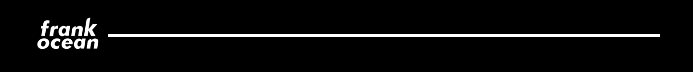
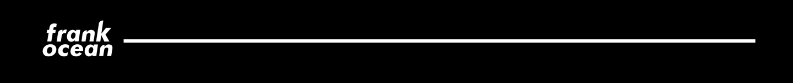

Frank Ocean (born Christopher Edwin Breaux on October 28, 1987) is an American independent musician and photographer. Known for his idiosyncratic musical style, Ocean first embarked on a career as a ghostwriter, and in 2010 he became a member of hip hop collective Odd Future. He released his breakout mixtape,Nostalgia, Ultra, to critical acclaim in 2011. It generated his first charting single "Novacane". In 2012, Ocean finished second place in the BBC's Sound of 2012 poll.
His debut studio album, Channel Orange, was released in July 2012 to critical acclaim. It reached number two on the Billboard 200 and was promoted with three singles: "Thinkin Bout You", "Pyramids", and "Sweet Life". In 2016, Ocean released the visual album Endless alongside his second studio album Blonde, which was released independently following several years of delays. Blonde was highly acclaimed by critics, and debuted at number one in the United States and the United Kingdom.
 
